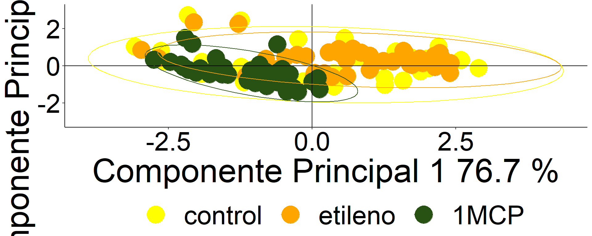
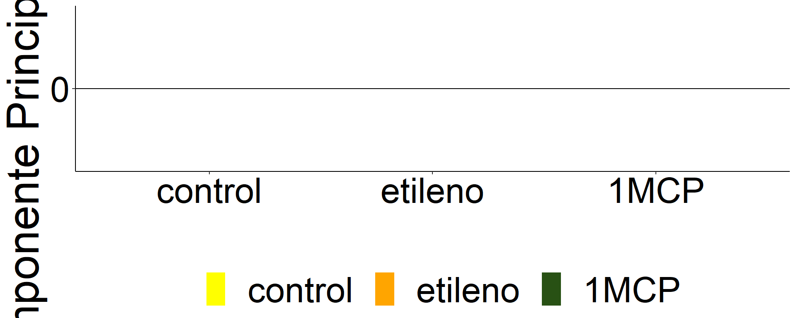
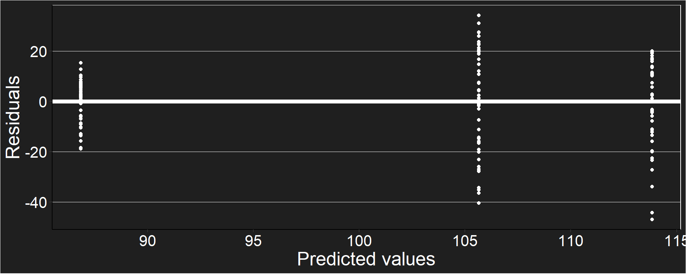
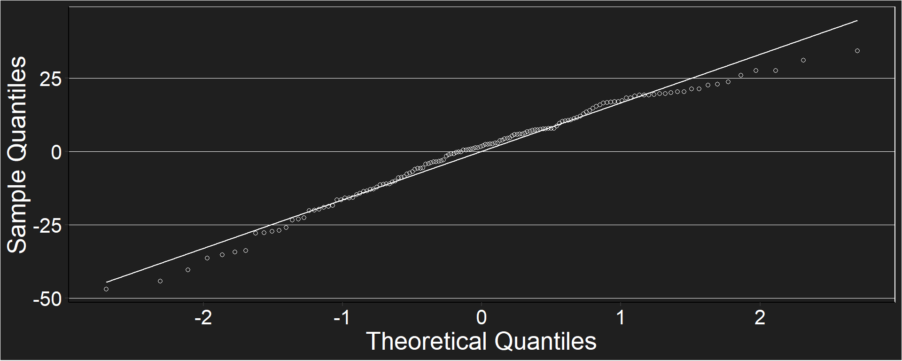
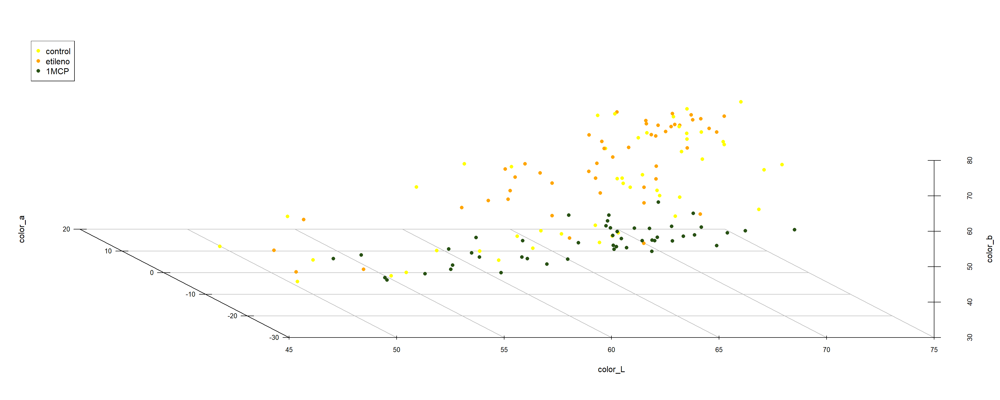
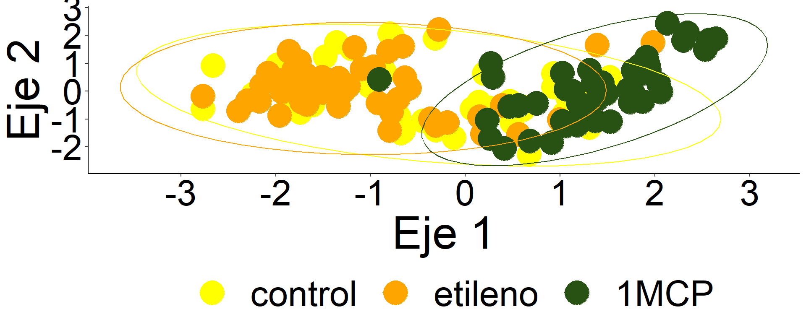

| treat | mean | min | max | sd |
|---|---|---|---|---|
| control | 105.1728 | 65.21946 | 139.9356 | 20.341033 |
| etileno | 113.8395 | 66.92551 | 133.8905 | 17.623015 |
| 1MCP | 87.6177 | 68.07181 | 102.2095 | 8.707679 |
Higher values indicate more advanced stages of maturation

## gls(model = (color_G) ~ treat, data = data_color_G, weights = varIdent(form = ~1 |
## treat))
##
## Shapiro-Wilk normality test
##
## data: e
## W = 0.97549, p-value = 0.01096| numDF | F-value | p-value | |
|---|---|---|---|
| (Intercept) | 1 | 8044.99599 | 0 |
| treat | 2 | 50.49325 | 0 |
##
## Dunnett's test for comparing several treatments with a control :
## 95% family-wise confidence level
##
## $control
## diff lwr.ci upr.ci pval
## etileno-control 8.666643 1.217489 16.11580 0.0196 *
## 1MCP-control -17.555117 -25.004272 -10.10596 1e-06 ***
##
## ---
## Signif. codes: 0 '***' 0.001 '**' 0.01 '*' 0.05 '.' 0.1 ' ' 1## $emmeans
## treat emmean SE df lower.CL upper.CL
## control 105.1728 2.935978 46.99 99.26637 111.07927
## etileno 113.8395 2.543663 46.94 108.72210 118.95682
## 1MCP 87.6177 1.256844 47.00 85.08925 90.14615
##
## Degrees-of-freedom method: satterthwaite
## Results are given on the ( (not the response) scale.
## Confidence level used: 0.95
##
## $contrasts
## contrast estimate SE df t.ratio p.value
## control - etileno -8.666643 3.884609 92.14 -2.231 0.0713
## control - 1MCP 17.555117 3.193685 63.65 5.497 <.0001
## etileno - 1MCP 26.221761 2.837231 68.60 9.242 <.0001
##
## Note: contrasts are still on the ( scale
## Degrees-of-freedom method: satterthwaite
## P value adjustment: tukey method for comparing a family of 3 estimates## [1] 0.4719229## [1] 0.6362055## [1] 0.795081

##
## Call:
## mrpp(dat = datos, grouping = grp, permutations = 999, distance = "bray", weight.type = 1)
##
## Dissimilarity index: bray
## Weights for groups: n
##
## Class means and counts:
##
## 1 2 3
## delta 0.1376 0.1047 0.08653
## n 48 48 48
##
## Chance corrected within-group agreement A: 0.1724
## Based on observed delta 0.1096 and expected delta 0.1325
##
## Significance of delta: 0.001
## Permutation: free
## Number of permutations: 999